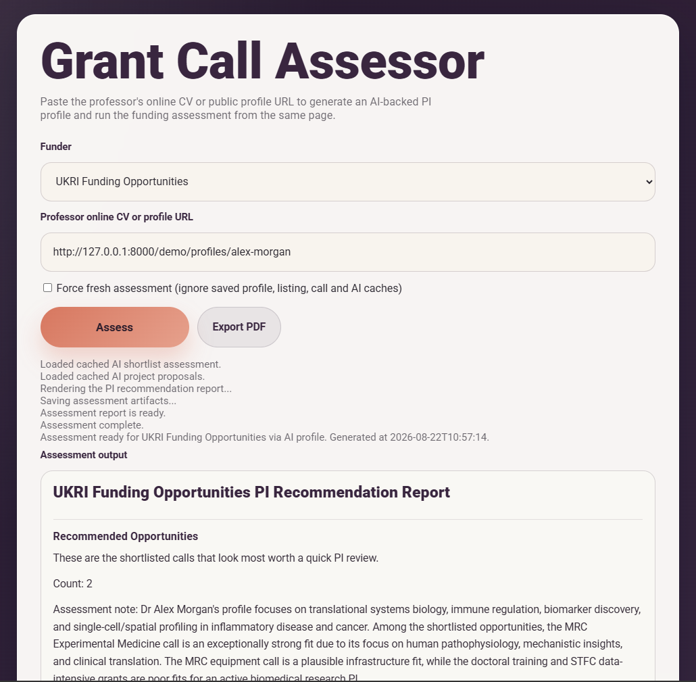

Selected Projects
JournalWings
Finance teams often spend hours reshaping transaction data by hand, with rules and corrections difficult to trace. JournalWings turns that process into a guided, validated workflow that produces consistent journal-ready output.
View Project
JournalWings turns a repetitive, spreadsheet-heavy finance process into a guided Python workflow. It transforms source transaction data into the structure required by a journal upload template. The relevant business rules are built directly into the application, so mappings, calculations and validations are applied consistently. An audit log records the processing context, helping explain the journal later if it is queried downstream. Larger workflows that once took hours can be prepared in minutes, with more consistent and traceable results.
Python · Excel · openpyxl · Data Validation · Workflow Automation
FileFlow
Filing breaks down when documents arrive without meaningful names or consistent context. FileFlow uses the destination folder to generate a reviewable filename from the structure already built into the workflow.
View Project
FileFlow turns the destination folder into a filename generator. It works best when a team has invested upfront in a repeatable folder hierarchy based on the documents it expects to manage. Its rules are highly configurable, allowing relevant metadata from different levels of the folder path to be mapped, combined and formatted for the naming convention each workflow requires. You drag a document to the project folder where it belongs, and FileFlow reads the path to pick up the filing context needed for a meaningful name. Many documents do not need AI classification because their category is already obvious; when the folder structure is well designed, FileFlow can generate a receiver-friendly filename automatically while still allowing the user to review it before filing.
Python · Desktop UI · File System Context · Validation Logic · Workflow Automation
Quicktask
Grants operations become hard to manage when applications, deadlines, tasks and decisions live in separate places. Quicktask brings that work into one tailored workspace so priorities and next actions are visible together.
View Project
Quicktask is a tailored workspace for managing grants operations in one connected place. It combines portfolio snapshots with applications, projects, tasks, reporting deadlines and priorities. The dashboard helps users identify current work, upcoming deadlines and issues that need attention. Updates, decisions and next actions stay alongside the relevant records, creating a useful trail of operational context. Built with Python, Flask and SQLite, Quicktask is designed around the real data and recurring decisions of a specific working environment.
Python · Flask · SQLite · Spreadsheet imports · Data validation · Portfolio dashboards
Grant Call Assessor
Researchers can spend significant time scanning funding calls that may not fit their expertise or priorities. Grant Call Assessor combines a PI profile with current opportunities to identify relevant calls and produce a focused assessment.
View Project
Grant Call Assessor is a prototype workflow for assessing funding opportunities against a researcher’s profile. It combines explicit triage rules with AI-assisted analysis, helping turn a broad search into a more focused and explainable assessment.
Python · Web scraping · UKRI data · Rule-based triage · Gemini API · Structured reports
About
I work in research finance in a large university environment, managing complex funding, financial and compliance workflows. Alongside that role, I build automation and internal tools to reduce repetitive work, improve data quality and make difficult operational processes easier to use. My earlier background includes almost ten years in project cost control within international engineering. I am now increasingly focused on Python, workflow automation, AI-assisted tools and practical software that solves real operational problems.